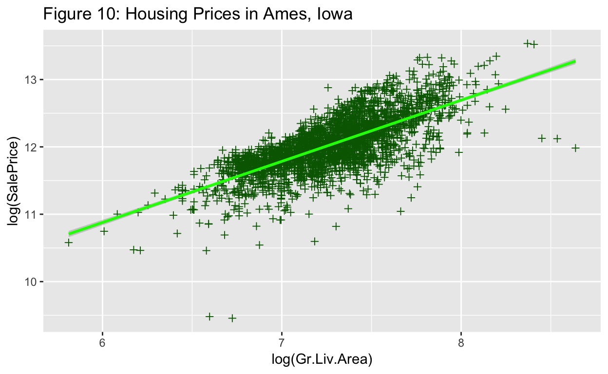
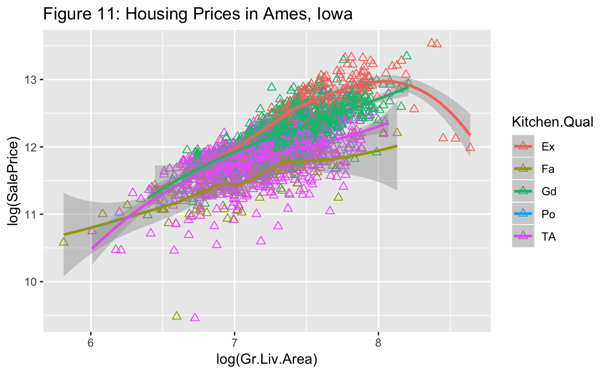
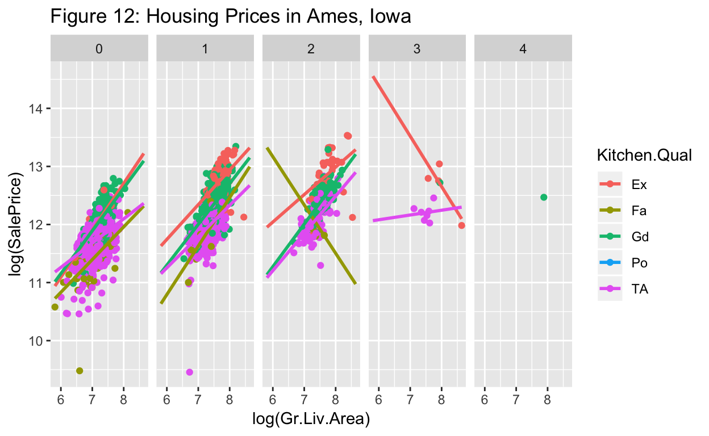

It is often necessary to create graphs to effectively communicate key patterns within a dataset. While many software packages allow the user to make basic plots, it can be challenging to create plots that are customized to address a specific idea. While there are numerous ways to create graphs, this tutorial will focus on the R package ggplot2, created by Hadley Wickham.
There are two key functions that are used in ggplot2:
qplot()or quick plot is similar to base plotting functions in R and is primarily used to produce quick and easy graphics.ggplot()the grammar of graphics plot is different from other graphics functions because it uses a particular grammar inspired by Leland Wilkinson’s landmark book, The Grammar of Graphics, that focused on thinking about, reasoning with and communicating with graphics. It enables layering of independent components to create custom graphics.Data: In this tutorial, we will use the AmesHousing data, which provides information on the sales of individual residential properties in Ames, Iowa from 2006 to 2010. The data set contains 2930 observations, and a large number of explanatory variables involved in assessing home values. A full description of this dataset can be found here.
# The csv file should be imported into rstudio:
AmesHousing <- read.csv("data/AmesHousing.csv")
# str(AmesHousing)qplot functionIn this section, we will briefly provide examples of how the qplot function can be used to create basic graphs. Run the code below and answer Questions 1)-5).
# Create a histogram of housing prices
qplot(data=AmesHousing, x=SalePrice, main ="Histogram of Housing Prices in Ames, Iowa")
# Create a scatterplot of above ground living area by sales price
qplot(data=AmesHousing,x=Gr.Liv.Area, y=SalePrice)
# Create a scatterplot with log transformed variables, coloring by a third variable
qplot(data=AmesHousing,x=log(Gr.Liv.Area),y=log(SalePrice),color=Kitchen.Qual)
# Create distinct scatterplots for each type of kitchen quality and number of fireplaces
qplot(data=AmesHousing,x=Gr.Liv.Area,y=SalePrice,facets=Kitchen.Qual~Fireplaces)
# Create a dotplot of sale prices by kitchen quality
qplot(data=AmesHousing,x=Kitchen.Qual,y=SalePrice)
# Create a boxplot of sale prices by kitchen quality
qplot(data=AmesHousing,x=Kitchen.Qual,y=log(SalePrice),geom="boxplot")Questions:
facet argument used for?
?qplot. Modify the above code to create a barchart (geom=bar) to count the number of sales for each level of kitchen quality. What is the deference between the color and fill command?
ggplot functionAll ggplot functions must have at least three components:
AmesHousing data.Thus the simplest code for a graphic made with ggplot() would have one of the the following forms:
ggplot(data, aes(x, y)) + geom_line() orggplot(data) + geom_line(aes(x, y)).Note the two lines of code above would provide identical results. In the first case, the aes is set as the default for all geoms. In essense, the same x and y variables are used throughout the entire graphic. However, as graphics get more complex, it is often best to creating local aes mappings for each geom as shown in the second line of code.
# Create a histogram of housing prices
ggplot(data=AmesHousing) + geom_histogram(mapping = aes(SalePrice))In the above code, the terms data= and mapping= are not required, but are used for clarification. For example, the following code will produce identical results:
ggplot(AmesHousing) + geom_histogram(aes(SalePrice)).
# Create a scatterplot of above ground living area by sales price
ggplot(data=AmesHousing) + geom_point(mapping= aes(x=Gr.Liv.Area, y=SalePrice))Questions:
aes is not within the geom. However the resulting graph should look identical to the one above.
ggplot with Fireplaces as the x-axis and SalePrice as the y-axis.
ggplot functionIn the following code, we layer additional components onto the two graphs shown above.
ggplot(data=AmesHousing) +
geom_histogram(mapping = aes(SalePrice/100000),
breaks=seq(0, 7, by = 1), col="red", fill="lightblue") +
geom_density(mapping = aes(x=SalePrice/100000, y = (..count..))) +
labs(title="Figure 9: Housing Prices in Ames, Iowa (in $100,000)",
x="Sale Price of Individual Homes") Remarks:
geom_density overlays a density curve on top of the histogram.y = (..count..) to modify the density. Alternatively, we could specify aes(x = SalePrice/100000, y = (..density..)) in the histogram geom.In the code below we create three scatterplots of the log of the above ground living area by the log of sales price



Remarks:
geom_point is used to create a scatterplot. As shown in Figure 10, multiple shapes can be used as points. The Data Visualization Cheat Sheet lists several shape options`geom_smooth adds a fitted line through the data.
method=lm specifies a linear regression line. method=loess creates a smooth fit curve.se=FALSE removes the shaded confidence regions around each line.fullrange=TRUE extends all regression lines to the same lengthfacet_grid and facet_wrap commands are used to create multiple plots. In Figure 12, we have created separate scatterplots based upon the number of fireplaces.color, shape or size), the commands occur outside the aes, as in Figure 10, color="green". When characteristics are dependent on the data, the command should occur within the aes, such as in Figure 11 color=Kitchen.Qual.In the above examples, only a few geoms are listed. The ggplot2 website lists each geom and gives detailed examples of how they are used.
Questions:
Gr.Liv.Area.
Year.Built as the explanatory variable and SalePrice as the response variable. Include a regression line, a title, and labels for the x and y axes.
Overall.Cond.
# A histogram of above ground living area
ggplot(data=AmesHousing) +
geom_histogram(mapping = aes(Gr.Liv.Area))# Create a scatterplot of above ground living area by sales price
ggplot(data=AmesHousing, aes(x=Year.Built, y=SalePrice)) +
geom_point() +
geom_smooth(method=lm) +
labs(title="Housing Prices in Ames, Iowa", x="Year Built", y = "Sale Price")# Create scatterplot and regression lines colored by the kitchen quality rating
ggplot(data=AmesHousing, aes(x=Year.Built, y=SalePrice, color=Overall.Qual)) +
geom_point() +
geom_smooth(method=lm, se=FALSE) +
labs(title="Housing Prices in Ames, Iowa", x="Year Built", y = "Sale Price")mplot functionThe mosaic package includes an mplot function that involves a helpful pull-down menu for graphic options.
Questions:
> mplot(AmesHousing) and select 2 for a two-variable plot. Select the gear symbol in the top right corner of the graphics window and choose the following items:ggplot2boxplotKitchen.Qual representing the condition of the saleSalePriceAfter selecting these items, click the Show Expression to see the ggplot2 code used to make the boxplot. Now modify the code to include an appropriate title to the plot.
mplot function by creating two new graphs that provide information on the SalePrice of homes in Ames, Iowa.str command after reading data into R, you will notice that each variable is assigned one of the following types: Character, Numeric (real numbers), Integer, Complex, or Logical (TRUE/FALSE). In particular, the variable Fireplaces in considered an integer. In the code below we try to color and fill a density graph by an integer value. Notice that the color and fill commands appear to be ignored in the graph.
# str(AmesHousing)
ggplot(data=AmesHousing) +
geom_density(aes(SalePrice, color = Fireplaces, fill = Fireplaces))In the following code, we use the dplyr package to modify the AmesHousing data; we first restrict the dataset to only houses with less than three fireplaces and then create a new variable, called Fireplace2. The as.factor command creates a factor, wich is a variable that contains a set of numeric codes with character-valued levels. Notice that the color and fill command now work properly.
# Create a new data frame with only houses with less than 3 fireplaces
AmesHousing2 <- filter(AmesHousing, Fireplaces < 3)
# Create a new variable called Fireplace2
AmesHousing2 <-mutate(AmesHousing2,Fireplace2=as.factor(Fireplaces))
#str(AmesHousing2)
ggplot(data=AmesHousing2) +
geom_density(aes(SalePrice, color = Fireplace2, fill = Fireplace2), alpha = 0.2)Customizing graphs: In addition to using a data frame, geoms, and aes, several additional components can be added to customize each graph, such as: stats, scales, themes, positions, coordinate systems, labels, and legends. We will not discuss all of these components here, but the materials in the references section provide detailed explanations. In the code below we provide a few examples on how to customize graphs.
ggplot(AmesHousing2, aes(x = Fireplace2, y = SalePrice, color = Paved.Drive)) +
geom_boxplot(position = position_dodge(width = 1)) +
coord_flip()+
labs(title="Housing Prices in Ames, Iowa") +
theme(plot.title = element_text(family = "Trebuchet MS", color = "blue", face="bold", size=12, hjust=0))Remarks:
position is used to address geoms that would take the same space on a graph. In the above boxplot, position_dodge(width = 1) adds a space between each box. For scatterplots, position = position_jitter() puts spaces between overlapping points.theme is used to change the style of a graph, but does not change the data or geoms. The above code is used to modify only the title in a boxplot. A better approach for beginners is to choose among themes that were created to customize the overall graph. Common examples are theme_bw(), theme_classic(), theme_grey(), and theme_minimal(). You can also install the ggthemes package for many more options.Questions:
color, fill, and alpha commands are used for. Hint: try running the code with and without these commands or use the Data Visualization Cheat Sheet.
coord_flip()?
theme_bw() instead of the given theme command. Explain how the graph changes.
Tab key to see various options) to determine what theme is the default for most graphs in ggplot.
In order to complete this activity, you will need to use the dplyr package to manipulate the dataset before making any graphics.
AmesHousing data to only sales under normal conditions. In other words, Condition.1 == NormTotalSqFt = GR.Liv.Area + Total.Bsmt.SF and remove any homes with more than 3000 total square feet.No indicates no fireplaces in the home and Yes indicates at least one fireplace in the home.https://www.youtube.com/watch?v=HeqHMM4ziXA and https://www.youtube.com/watch?v=n8kYa9vu1l8: Two introductory videos on ggplot2 by Roger Peng.
https://www.rstudio.com/wp-content/uploads/2015/03/ggplot2-cheatsheet.pdf: Data Visualization with ggplot2 Cheat Sheet
http://docs.ggplot2.org/current/: A well-documented list of ggplot2 components with descriptions
http://www.statmethods.net/advgraphs/ggplot2.html: Quick-R introduction to graphics
http://cran.r-project.org/web/packages/ggplot2/ggplot2.pdf: Formal documentation of the ggplot2 package
http://www.ceb-institute.org/bbs/wp-content/uploads/2011/09/handout_ggplot2.pdf: A tutorial on ggplot2 by Hadley Wickham.
http://stackoverflow.com/tags/ggplot2: Stackoverflow, an online community to share information.
http://www.cookbook-r.com/Graphs/: R Graphics Cookbook, a text by Winston Chang http://ggplot2.org/book/ : Sample chapters of Hadley Wickhams text, ggplot2: Elegant Graphics for Data Analysis